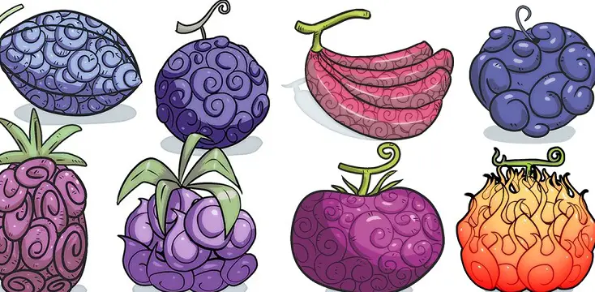
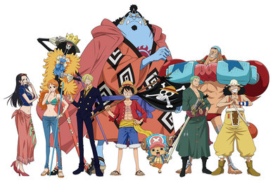

Tony Tony Chopper
Also known as "Cotton Candy Lover".
Quick Intro
The power of the Zoan-type Human-Human Fruit provides him with the ability to transform into a full-sized reindeer or a reindeer-human hybrid. A self-developed drug he calls Rumble Ball enables him to perform even more transformations for a short time.
Rejected by his herd because of his blue nose and eating the Devil Fruit, Chopper is rescued by Drum Island's quack doctor Doctor Hiriluk. While developing a potion to create cherry blossoms when in contact with snow, Chopper is heartbroken when Hiriluk falls ill with a deadly disease. After Hiriluk's death, Doctor Kureha takes him in as his mentor.
After the Straw Hats arrive at Drum Island and take Chopper with them, Kureha uses Hiriluk's potion to turn the snowy sky into cherry blossoms, fulfilling Hiriluk's life mission. When complimented, Chopper acts flustered and sometimes yells at the person who complimented him to stop trying to make him happy. A running gag within the series is when other characters mistake him as a Tanuki, and he angrily corrects them, pointing out that he is a Tonakai (Japanese for "Reindeer").
- What is devil fruit
If you take a bite, you will acquire a mysterious ability. How it grows and how it is harvested is shrouded in mystery, but those who eat it gain supernatural powers and are called 'powered people'.

Ability users are feared by the general public as people with extraordinary abilities. - About Straw Hat Pirates
A pirate group formed by the main character, Monkey D. Luffy, in the East Sea. After two years of training, the Straw Hat Crew regrouped in the Sabaody Archipelago.

Travel through the New World to reach the final island, Raftel!